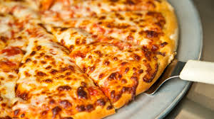
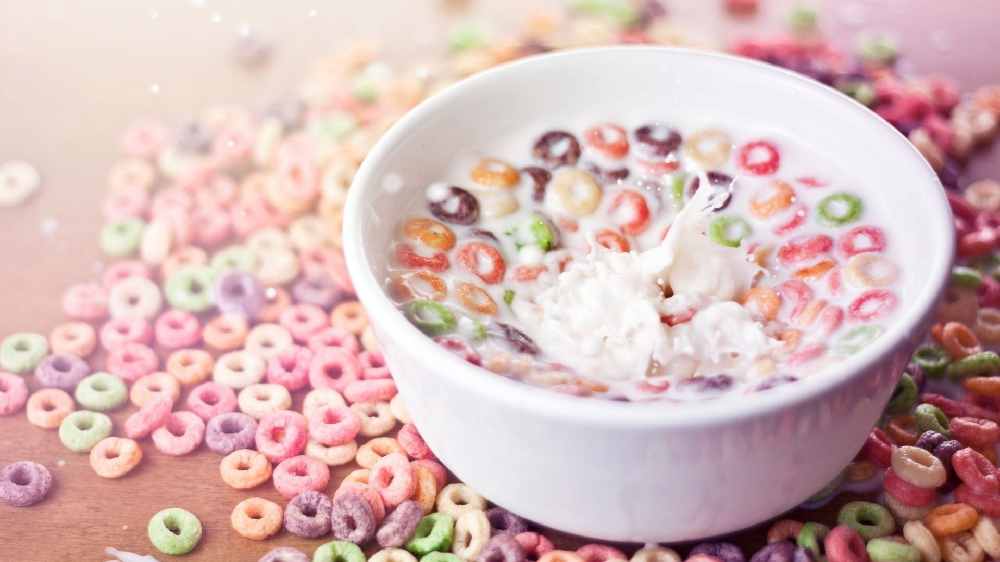

Toast is a classic part of every North American breakfast.

A long, thin, solid, cylindrical pasta. It is a staple food of traditional Italian cuisine.

Thinly sliced pepperoni is a popular pizza topping in North American pizzerias.

Bacon is a type of salt-cured pork. Bacon is prepared from several different cuts of meat, typically from the pork belly or from back cuts.

Froot Loops are an amazingly tasty and filling breakfast cereal.
Soup is good for you.